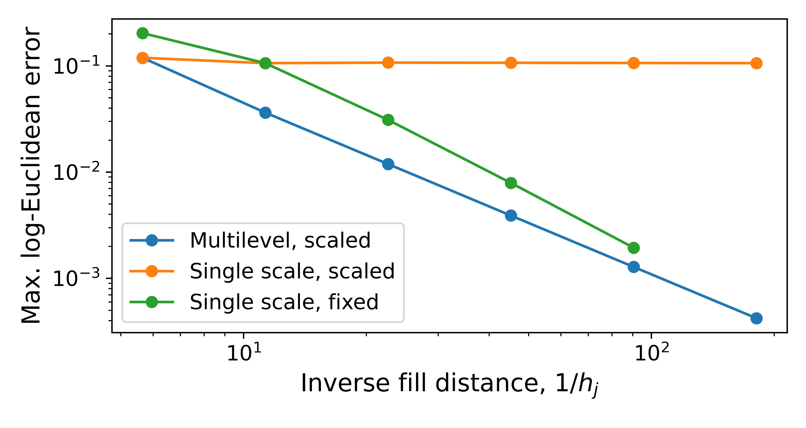

Selected abstract algebraic results (transference principle, multilevel conjugacy, nested orthogonal-projection argument) are formalized and mechanically checked in Lean 4 in accompanying code.
Abstract
We study kernel approximation and multilevel residual correction for functions with values in a manifold that admits a global logarithm onto a finite-dimensional Hilbert space, such as positive definite matrices, exponential Lie groups, and Hadamard manifolds. Approximating in logarithmic coordinates keeps the approximant on the manifold and transfers Hilbert-space error estimates verbatim. To express these errors in the natural geometry of the target, we prove metric comparisons. In particular, we obtain a sharp, scale-invariant bound between the log-Euclidean and affine-invariant distances on positive definite matrices, with a constant that depends only on condition numbers. For multilevel approximation, compactly supported kernels scaled to the fill distance give algebraic convergence with sparse, uniformly well-conditioned systems. These guarantees require appropriate sample locations and approximation scales. Compact groups are treated through a principal logarithm, where a bi-invariant metric gives error bounds with constant one. Finally, the log-Euclidean and Karcher means differ by $\mathcal O(r^3)$ near the identity and by $\mathcal O(r^2)$ around a general point, where $r$ is the logarithmic data radius and the second bound is sharp.
Problem
Kernel approximation of functions whose values lie in nonlinear manifolds (positive definite matrices, exponential Lie groups, Hadamard manifolds) must keep approximants on the manifold. It must also give error bounds in the manifold's natural geometry.
Approach
Functions are approximated in logarithmic coordinates via a global logarithm onto a finite-dimensional Hilbert space, which transfers Hilbert-space error estimates exactly. Metric comparison theorems relate the log-Euclidean distance to natural distances such as the affine-invariant metric. Multilevel residual correction uses compactly supported kernels scaled to the fill distance. Compact groups and Karcher means are treated separately. Selected algebraic results (Propositions 2.2, 3.1, 5.1 and the nested-projection argument behind 5.2) are formalized in Lean 4.
Results
A sharp, scale-invariant bound between log-Euclidean and affine-invariant distances depends only on condition numbers. Multilevel interpolation converges algebraically with sparse, uniformly well-conditioned systems. Log-Euclidean and Karcher means differ by O(r^3) near the identity and by O(r^2) around a general point, the latter bound being sharp. In numerical tests, multilevel error drops to 4.21e-4 with condition numbers below 195.

Figure 1: Comparison of multilevel interpolation with scaled kernels, single-scale interpolation with the same scaled kernels, and fixed-radius interpolation. The plotted errors are refined numerical estimates of the maximum log-Euclidean error. Residual correction produces decreasing errors while the corresponding single-scale scaled method stagnates. Fixed-radius interpolation also converges, bu